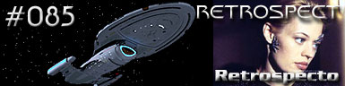
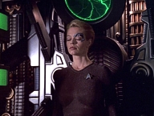
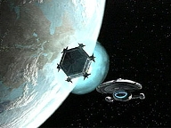
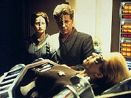
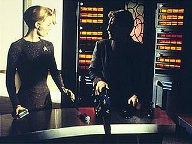
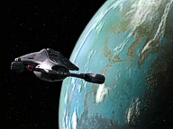
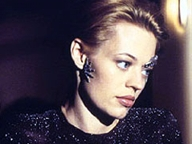

|
Voyager
Temporada 4

Anlise do episdio por
Daniel
Sasaki



| MANCHETE
DO EPISDIO Data Estelar: 51658.2  A capit Janeway adquire novos armamentos de um comerciante Entharan chamado Kovin e Seven of Nine designada para ajudar na integrao da tecnologia aos sistemas da Voyager. Quando o visitante critica seu trabalho e a afasta do terminal, a ex-Borg o agride fisicamente. Depois que Seven exibe um ataque de ansiedade na Enfermaria, o Doutor acredita que aquilo foi causado por memrias reprimidas tentando vir tona. Ele acabou de adicionar uma sub-rotina psiquitrica a seu programa e guia a colega por uma terapia hipntica. Durante a sesso, Seven se recorda que Kovin realizou um procedimento cirrgico nela e extraiu tecnologia Borg.Enquanto o Doutor sonda suas memrias, Seven lembra que a interveno se passou enquanto ela e Kovin testavam armas. Ao entrar em seu laboratrio, o aliengena disparou um raio de thoron contra ela. Depois, ativou os tubos de assimilao em seu brao e extraiu as nanossondas. Outro Entharan estava deitado na mesa ao lado e foi assimilado como cobaia. Janeway convoca Kovin para o indagar sobre o assunto, mas ele nega veementemente as acusaes. Diz que a arma de thoron disparou acidentalmente. Diante das informaes contraditrias, a capit ordena que Tuvok inicie a investigao.  Enquanto a Voyager traa um curso de perseguio, Janeway e Tuvok continuam investigando. Eles simulam uma exploso de thoron perto do brao de Seven e, depois, estudam a amostra de tecido. Descobrem que suas nanossondas se regeneraram da forma como Kovin descreveu que ocorrera no laboratrio. Todos percebem que as memrias reprimidas da ex-Borg foram, provavelmente, imagens de suas experincias como zango. 
Um excelente segmento. O que mais chama a ateno em "Retrospect" que os tripulantes no saem como os "mocinhos". Ainda que bem intencionados na defesa de Seven, eles erram no julgamento... e erram feio. E o melhor: o roteiro no tenta consertar a "mancada" com discursos paliativos. Voyager segue de forma audaciosa nesta que sua melhor temporada. Deve isso a Seven? Sim e no. No como se a nova personagem fosse o melhor que j aconteceu na srie. Mas a ex-Borg, alm de uma bela "paisagem", trouxe a controvrsia e o conflito que faltavam - papel originalmente atribudo aos Maquis, que, no entanto, nunca o cumpriram. Ela escrita com seriedade, segurana e coerncia. At aqui, o foco tem sido os dilemas morais e humanos da ex-Borg. Quem perde so os outros personagens, j relegados a participaes meramente ilustrativas.  A ex-Borg - que sempre se assemelhou a uma Vulvana - demonstra ansiedade exacerbada, claustrofobia e as emoes ficam flor da pele. claro que o Doutor se intriga. Acaba atribuindo aquela inquietao a memrias que, por alguma razo, foram bloqueadas. Assim, por meio de uma tcnica bastante amadora, induz Seven a uma "regresso", durante a qual a dupla constata que Kovin a atacara na superfcie do planeta. Digno de nota: a frase "ele me violou" constava no comercial original para UPN, coberta pela imagem de Seven na mesa. O telespectador, com base naquilo, foi levado a achar que o episdio relataria um caso de estupro. Mas as lembranas no eram verdicas. Tudo o que acontecera no passou de um acidente. Ningum duvida das intenes de Seven. Nem mesmo o telespectador. Deduz-se que, provavelmente, as cenas do "ataque" eram remanescentes de assimilaes que ela testemunhara quando zango. As especulaes ficam a cargo dos psiclogos. S que, infelizmente, a concluso vem tarde demais. Enquanto a investigao se estende, a tripulao tenta comprovar as acusaes da colega. No apenas Janeway queria que Seven se sentisse parte da famlia, como Kovin deixara uma m impresso. Surge o questionamento: at onde vai a imparcialidade da capit? E a de Tuvok, suposto investigador lgico? Parece que, com base nas imagens que firmaram do aliengena, lutaram at o final para encontrar evidncias de que era culpado.  Kate Mulgrew est cada dia mais desenvolta no papel. Aqui - muito diferente de Picard, que nunca errava -, Janeway enfrenta com humildade seus erros de julgamento. O que a destaca na histria que os roteiristas no tentaram eximi-la de culpa. J Jeri Ryan, que vem brilhando a cada novo episdio, merece todas as honras. O clmax, para ela, a cena (muito bem dirigida por Trevino), em que Janeway, Tuvok e o Doutor constatam que Kovin era inocente. Todos os olhares se voltam para ela e a ex-Borg percebe que est sozinha. Contudo, nem tudo perfeito em "Retrospect". Pode-se entender, com base nos rigores da cultura Entharan, que Kovin tenha se desesperado diante do veredicto. Mas meio forada a idia de que fugiria em pnico na sua nave, abandonando tudo para trs e sem perspectivas frente. O desastre que o matou ainda mais incrvel. Por que ele abre fogo contra a Voyager, se a capit - apoiada pelo magistrado - afirmou que descobrira a sua inocncia? Como que Harry nunca acerta no transporte, sempre impedido por naves tecnologicamente inferiores. O telespectador tem de relevar esses fatos no roteiro, pois so necessrios ao desfecho - esse sim, bastante forte.  No fim das contas, "Retrospect" se destaca pelo foco nos personagens - e no na ao - e exemplifica como Voyager tem potencial. A srie no deveria se tratar de explorao espacial ou da viagem para casa, mas dos conflitos humanos que eclodem no percurso. Quisramos, apenas, que episdios como esse fossem a regra e no a exceo. Citaes: Kovin - "It's good to see the art of
negotiation isn't lost on you, Captain." Seven
- "The Captain gives me greater liberty only when she needs my expertise." Janeway
- "Here we are again. Oh, I'm tired of having this conversation. You know
what I'm going to say. I know how you're going to respond, so it seems
pointless to say anything!" Janeway - "I'm
getting a bad feeling about this, Tuvok. We aren't finding anything that
implicates Kovin." Seven
- "As a Borg, I was responsible for the destruction of countless millions
and I felt nothing, but now I regret the destruction of this single being." Janeway
- "We all rallied around Seven, Doctor, myself included. I wanted her to
know she was part of this family, that we would support her, fight for her no
matter what. We let our good intentions blind us. We all bear responsibility
for Kovin's death, and we all have to live with it, but to delete that burden
would be the last thing any of us should do."
Ficha tcnica: Direo de
Jesus Salvador Trevino Elenco: Kate
Mulgrew como Kathryn Janeway Elenco
convidado: |